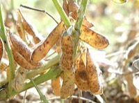

だいず（大豆）の生産量
いちばん多くとれる都道府県
だいずが日本でいちばん多くとれるのは北海道です。13万2,400 tで、全国（25万2,400 t）の52%を占めます。

| 順位 | 都道府県 | 収穫量 | 全国に占める割合 |
|---|---|---|---|
| 1位 | 北海道 | 13万2,400 t | 52% |
| 2位 | 宮城県 | 1万8,900 t | 7.5% |
| 3位 | 秋田県 | 1万1,300 t | 4.5% |
この数字について
- 分類：マメ科
- 全国の収穫量：25万2,400 t
- この数字が表すもの：収穫量（畑や田でとれた重さ）
- 調査：作物統計調査 作況調査（麦・豆・工芸農作物ほか） 令和6年産
- 46県分を調査（調査していない県は順位に入りません）